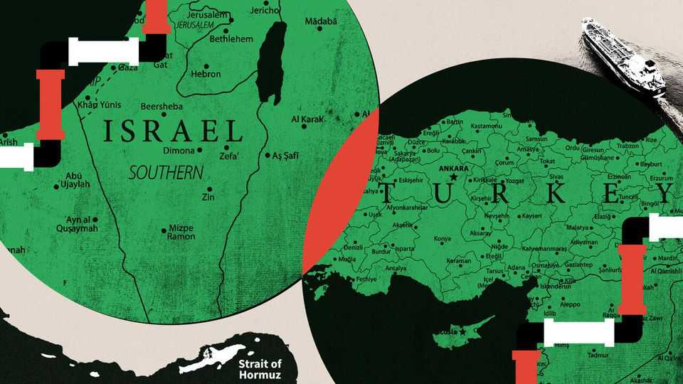

Turkey and Israel should trade energy, not insults
Both have much to gain from being less belligerent
July 2nd 2026

A minister in Turkey has spoken of one day “ruling” Jerusalem. Israeli officials have warned darkly that Turkey is “the new Iran”. Listen to the volleys of invective flying in both directions, and you might think that two of the Middle East’s pivotal powers are heading for conflict.
The tension is real. Turkey, a mostly Muslim country, fumes over Israel’s ill-treatment of Palestinians. Israel accuses Turkey of harbouring leaders of Hamas, the Islamist group that attacked Israel on October 7th 2023. Each thinks the other threatens its borders. Israel has fostered ties with Kurds, including some that Turkey’s government, ever wary of Kurdish nationalism, sees as enemies. Turkey has close relations with the ex-jihadists now ruling Syria, who appear to be reformed but who Israel fears could one day prove hostile to the Jewish state.
Israel’s prime minister and Turkey’s president often swap ferocious insults. Binyamin Netanyahu recently called Recep Tayyip Erdogan an “antisemitic dictator” who is “committing genocide against the Kurds”. Then again, Mr Erdogan has likened the Israeli leader to Hitler, saying Israel is a chaos factory fuelled “by blood and tears”.
Such rhetoric gets attention abroad, but it is mostly intended for domestic ears. Mr Netanyahu faces a tough election in the autumn, and fears that he will lose office having been cast as the man who failed his people on October 7th. Mr Erdogan may lean on Turkey’s parliament to call an election next year. Each loves to pose as a doughty defender of the nation against external threats. Each is thus a handy foil for the other.
It does not have to be this way. Both countries are allies of America, which is, belatedly, trying to discourage the verbal salvoes. Not long ago, the armed forces of Israel and Turkey were able to co-operate. In the recent past it was possible to imagine healthy economic ties, too. Their respective industrial and technological strengths and physical proximity should have made that straightforward. Given the right politics, how might a better relationship be fostered again?
Energy may be the key, despite an embargo Mr Erdogan’s government imposed on trade with Israel in 2024. Much of the oil Israel imports is pumped in Azerbaijan or the Kurdish region of Iraq, and then transported by pipeline through Turkey or shipped through Ceyhan, a Turkish port.
More should follow. Given Iran’s ability to disrupt the flow of hydrocarbons through the Strait of Hormuz, other countries should develop alternative sources and supply routes. One rich possibility is gas in the eastern Mediterranean. Exploration there by Israel is already advanced. It should be open to joint projects with Turkey and other littoral states to develop subsea gasfields and export the energy they find there.
When Israel and Turkey worked together more closely, plans were drawn up for a pipeline to connect the eastern Mediterranean gasfields to Turkey’s southern ports. A related project would be to forge a regional network of pipelines to bring oil and gas from afar more easily to market. Israel and Turkey should both aspire to be a part of this network linking Gulf producers and others to buyers in Europe and Asia.
It is still not clear when, or even if, the Strait of Hormuz will be fully reopened to tanker traffic, at least without users paying fees to Iran (and perhaps Oman). If Israel and Turkey want to reduce their vulnerability to the regional rogue, and maybe make a large heap of money in the process, they should trade fewer barbs and more barrels. ■
Subscribers to The Economist can sign up to our Opinion newsletter, which brings together the best of our leaders, columns, guest essays and reader correspondence.